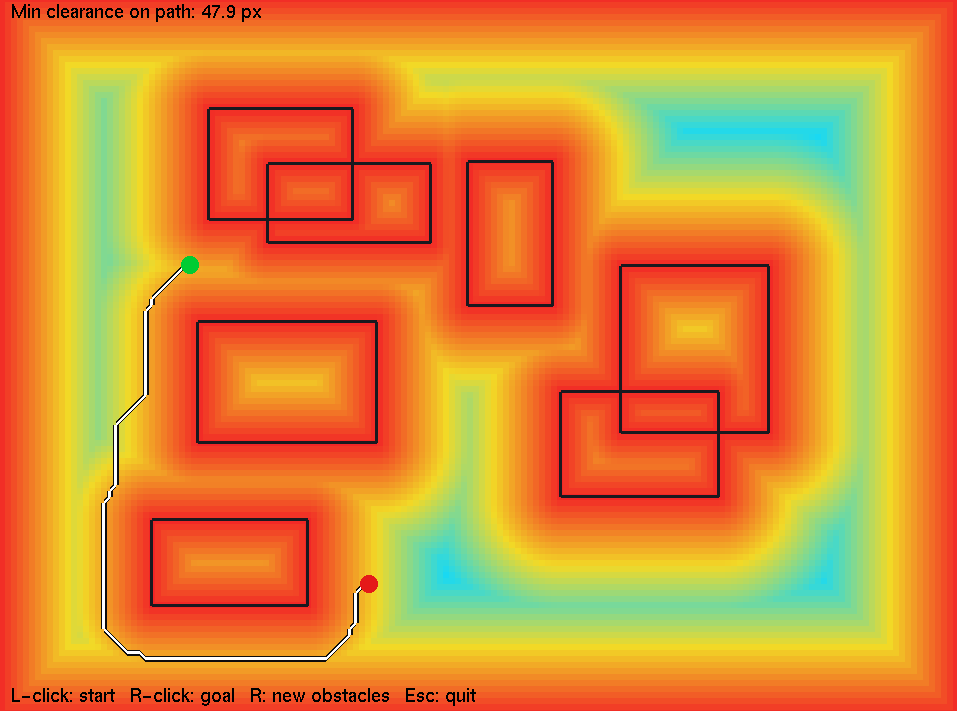
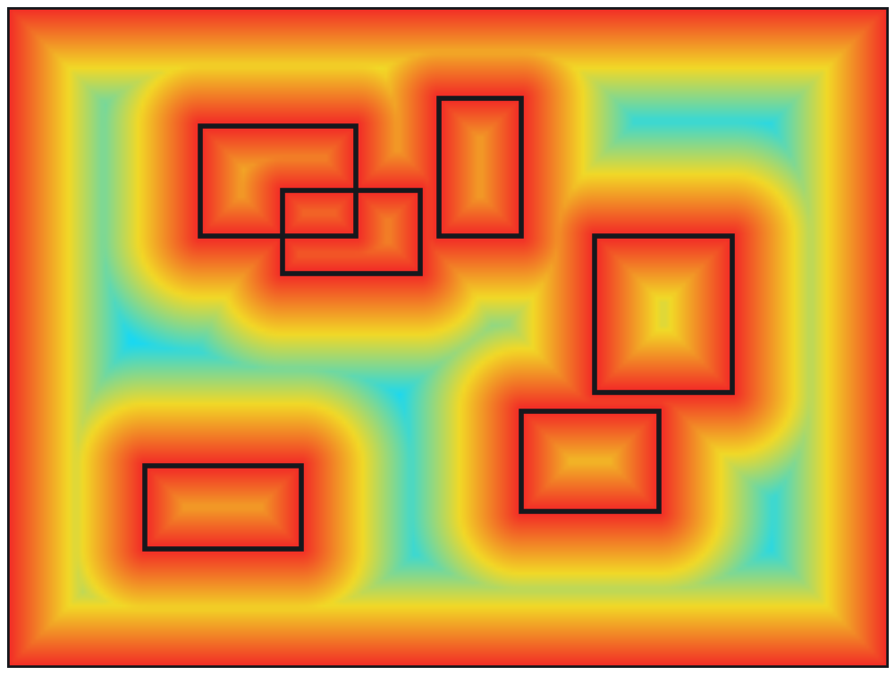
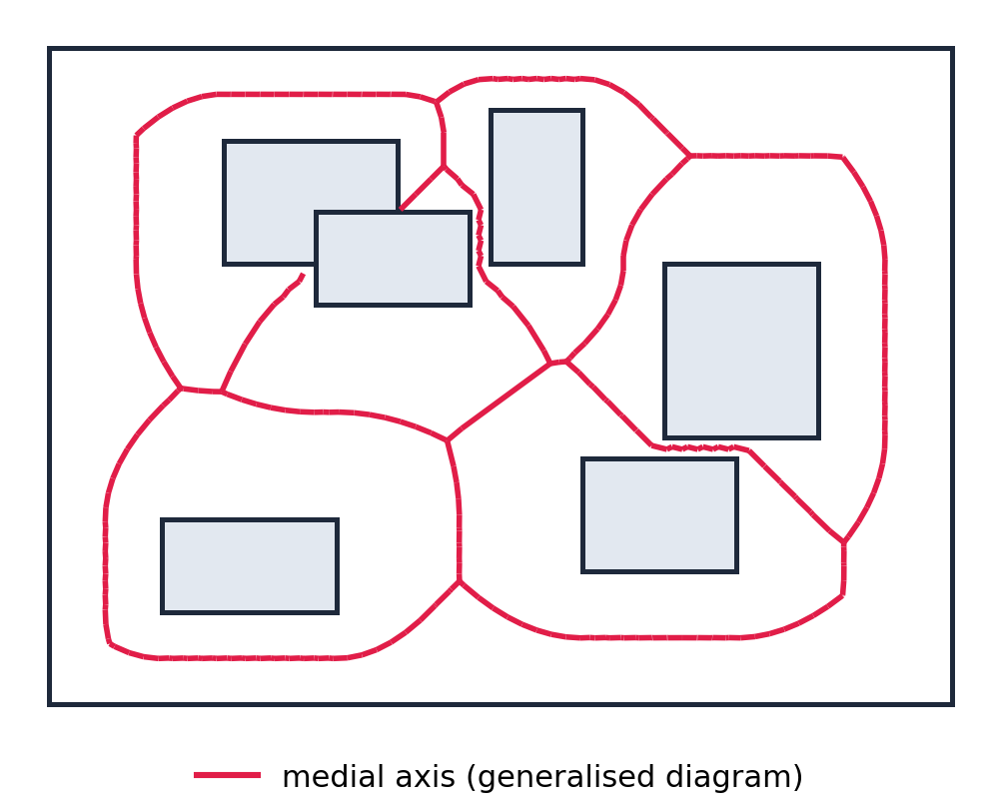
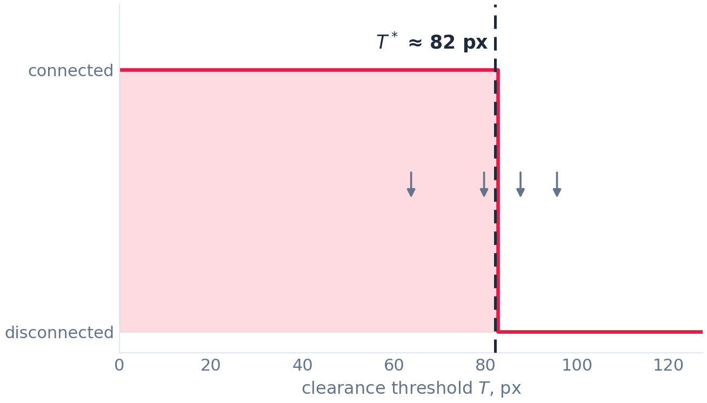
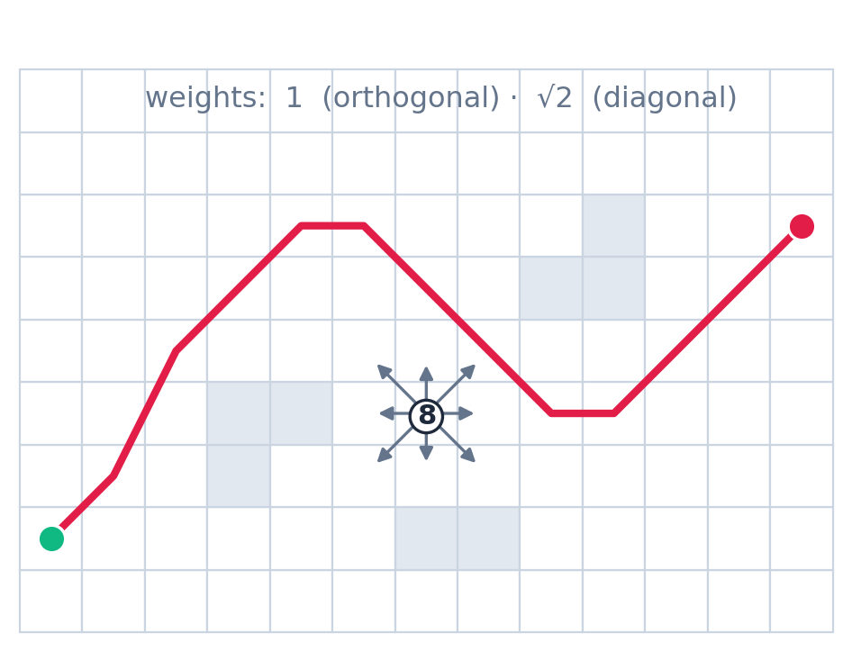

Coursework · Computational geometry
Planning a path that stays as far from the walls as it can
A robot with physical width does not want the shortest route; it wants the route whose tightest squeeze is as wide as possible. This is an interactive planner that computes a clearance field against segment obstacles, binary-searches for the widest corridor connecting start and goal, and then runs Dijkstra inside it.
- 160 × 120grid cells, 6 px each
- 40bisection steps per replan

Why "shortest" is the wrong objective
The standard grid-planning demo asks for the shortest path and gets a route that scrapes along every corner it can. That is fine for a point. It is not fine for anything with a body: a real robot has a radius, its position estimate has error, and its controller has tracking error, and all three eat into whatever gap the planner left. A path two centimetres shorter that passes within one centimetre of a table leg is strictly worse.
The objective that matches the physical constraint is a bottleneck one. A path's quality is not its length but the smallest clearance anywhere along it:
maximise over γ of ( minimum over x in γ of c(x) ), where c(x) is the distance from x to the nearest obstacle.
This is the widest-path problem. Note what it does not care about: length. Every path through the same narrowest gap scores identically, so the objective alone leaves a huge set of optimal answers, including ones that wander pointlessly. Hence two stages: find the best achievable bottleneck, then pick the shortest route that achieves it. Only the second stage cares about distance, and only inside a region the first has already declared safe.
The clearance field
Obstacles live in a flat std::vector<Seg> of line segments — no polygons, no topology, just endpoint pairs. Each random rectangle contributes four, and the window border four more, so the frame is treated as a wall instead of letting paths hug the screen edge. With five to seven rectangles that is 24 to 32 segments.
The 960 × 720 window is cut into 6-pixel cells: a 160 × 120 grid, 19,200 cells. For each cell centre, computeClearance brute-forces the minimum distance to every segment:
for each cell:
best = +inf
for each segment s:
best = min(best, distPointSeg(centre, s))
clearance[cell] = bestPoint-to-segment distance is the usual clamped projection: project the point onto the infinite line, clamp the parameter t to [0, 1] so points beyond either end fall back to that endpoint, then measure to the projected point. The clamp is the whole reason this works for segments rather than lines, and it is why the field around a rectangle corner has circular contours rather than a wedge.
That is 19,200 × ~28 ≈ 540,000 distance evaluations — fast enough that no spatial index is warranted at this size. It is O(N·m) for N cells and m segments, and it would become the bottleneck long before the search does if the obstacle count grew.

The blue ridges are the interesting part. A point sits on a ridge when it is equidistant from its two nearest obstacles — exactly the definition of an edge of the generalised Voronoi diagram of the segment set, the medial axis of the free space. The planner never constructs that diagram. It samples the field that implies it and lets the search find the ridges by itself: no degenerate-case handling, no parabolic-arc arithmetic, but only as much accuracy as the grid provides.

Binary search over the threshold
The trick that makes the bottleneck objective searchable is to stop optimising over paths and optimise over a scalar instead. Fix a threshold T, delete every cell with clearance < T, and ask one yes/no question: are start and goal still in the same connected component? A plain 8-connected BFS answers that in O(N).
The answer is monotone in T: raising the threshold only removes cells, so a component once split stays split. The predicate is true on [0, T*] and false above, and T* — the largest threshold keeping them connected — is exactly the best achievable bottleneck. Monotone predicate, so: bisect.

The upper bracket is min(clearance[start], clearance[goal]), since no path's bottleneck can exceed the clearance at its own endpoints; the lower bracket is 0. The loop runs a fixed 40 bisections rather than testing convergence — 40 halvings of a range under 400 px puts the residual interval below float precision. One guard precedes it: if the points are not connected even at T = 0.5, the planner reports no path. That happens when a click lands inside a rectangle.
Forty O(N) BFS passes is about 770,000 cell visits worst case, which is why dragging the goal feels instant. The clearance field depends only on the obstacles, so clicking a new endpoint reruns the search alone.
Dijkstra inside the corridor, and why not A*
With T* known, the safe corridor is the set of cells with clearance ≥ T*, and the remaining job is the shortest route inside it. shortestPath runs Dijkstra on that masked sub-grid with 8-connectivity, weights 1 orthogonally and √2 diagonally, using a std::priority_queue with lazy deletion — stale entries are discarded by a d > dist[cur] check rather than decrease-key. It stops as soon as the goal is popped, and the path is walked back through a predecessor array and reversed.
One detail: it is called with T* − 0.01, not T*. Bisection converges from below, but the corridor at exactly T* can be one cell wide and sensitive to the last float ulp; the relaxation guarantees the search sees the corridor BFS just certified as connected.

A* would be admissible here — straight-line Euclidean distance never overestimates the 8-connected cost — but it would not buy much. A replan is dominated by the clearance field and the 40 BFS passes, not by the one Dijkstra run, so halving the last stage moves the total by a few percent. And the corridor is exactly the case where a straight-line heuristic performs badly: a narrow winding channel around obstacles, where the heuristic points the search into walls, the frontier fans out anyway, and A* degenerates towards Dijkstra's expansion count. Dijkstra is fewer moving parts for the same answer.
Complexity and what the grid costs you
| Stage | Cost |
|---|---|
| Clearance field | O(N·m) |
| Binary search (40 × BFS) | O(N log(1/ε)) |
| Dijkstra in corridor | O(N log N) |
Total O(N·m + N log N). Moving the start or goal skips the first row entirely.
The limitations are all consequences of the grid, and they are worth stating rather than glossing:
- The clearance field is sampled, not exact. Clearance is evaluated at cell centres only, so a cell's true minimum can be lower than the stored value by up to half a cell diagonal — about 4.2 px here. The reported
T*is an estimate that can be optimistic by roughly that much; the fix is a finer grid, or subtracting that bound as a safety margin. - It approximates the Voronoi diagram, it does not compute it. No parabolic arcs, no event queue, no degenerate-case handling. The ridges are wherever the sampled field happens to put them, and they move when the grid resolution changes.
- The path is not Euclidean-shortest. An 8-connected metric only represents directions in 45° increments, so a straight run at an intermediate angle becomes a staircase up to about 8% longer than the true segment. At 6 px cells this is visible in the drawn route.
- The route does not follow the medial axis everywhere. The textbook picture says the path runs along the Voronoi edges. That holds only in the tight passages, where the ridge is the only way through. Where the corridor is wide, Dijkstra cuts the corner and leaves the ridge — correctly, since the bottleneck constraint is already satisfied and only length remains. Right behaviour, but not the one the picture implies.
- The weights are in cell units, not pixels. Dijkstra's cost is never multiplied by the cell size. A uniform scale factor does not change which path wins, but the distance array should not be read as pixels.
Controls: left click sets the start, right click sets the goal, R regenerates the obstacle set, Esc quits. Everything replans on each event; the field is only rebuilt on R.